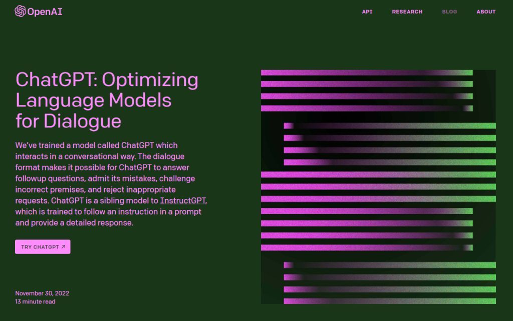
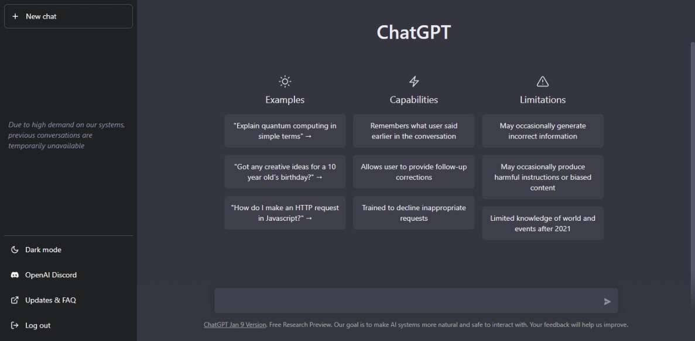

ChatGPT: Everything You Really Need To Know And Why
ChatGPT is a state-of-the-art language generation model developed by OpenAI. It is based on the GPT (Generative Pre-trained Transformer) architecture and is trained on a massive dataset of conversational text, making it particularly well-suited for natural language understanding and generation tasks.
One of the key features of ChatGPT is its ability to generate human-like text, including the use of appropriate grammar, punctuation, and even style. This makes it particularly useful for a wide range of applications, such as chatbots, virtual assistants, and automated writing.
In order to use ChatGPT, you first need to fine-tune the model on a specific task or dataset. This can be done using the Hugging Face's transformers library, which allows you to easily load the pre-trained ChatGPT model and fine-tune it on your own data.
Once fine-tuned, ChatGPT can be used to generate text in a variety of formats, such as responses to user input, complete paragraphs or even full articles. It also able to generate a wide range of languages and there are many pre-trained models that support multiple languages such as English, French, German, etc.
One of the most interesting and powerful capabilities of ChatGPT is its ability to perform contextualized language understanding. This means that it can understand the meaning of text in relation to its context, which allows it to generate more accurate and relevant responses.
In conclusion, ChatGPT is a powerful language generation model that can be fine-tuned for a wide range of natural language processing tasks. Its ability to generate human-like text and perform contextualized language understanding makes it a valuable tool for building advanced chatbots, virtual assistants, and other conversational AI applications.
Copyright © 2023 AdilJamal